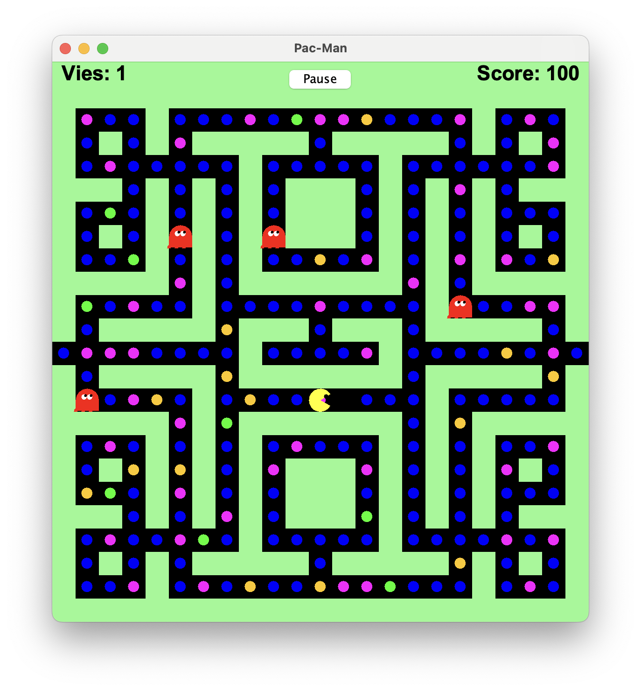

Pacgomme Bleue
Points : 100
Effet : Aucune action.
Réinventer le jeu classique de Pacman en appliquant les principes de la programmation orientée objet et les patterns de conception. Ce projet universitaire a impliqué une conception minutieuse pour un code propre, évolutif et facilement maintenable.
La partie se déroule dans un labyrinthe, avec l'objectif de collecter les pacgommes tout en évitant les fantômes. Les règles ajoutées, comme les pacgommes bonus et les effets spéciaux, ont apporté une touche moderne au jeu original.

L'interface principale du jeu avec Pacman dans le labyrinthe et les fantômes à la poursuite.
Un prototype fonctionnel réalisé rapidement pour tester et déboguer les fonctionnalités clés du jeu. Cela a permis de comprendre les exigences et les difficultés techniques avant la conception finale.
Dans notre version du jeu Pacman, le joueur navigue dans un labyrinthe pour manger des pacgommes tout en évitant les fantômes. Chaque pacgomme a un effet spécial sur Pacman ou sur le jeu :
Points : 100
Effet : Aucune action.

Points : 300
Effet : Pacman devient un invisible pour les fontomes. Sa couleur devient jaune pale et pourra les traverser sans perdre de vie.

Points : 500
Effet : Pacman devient un superpacman. Sa couleur devient orange et les fantômes deviennent bleus et se déplaçant plus lentement.

Points : 1000
Effet : Modifie la structure du labyrinthe
Ce projet Pacman a été un excellent terrain d'apprentissage pour explorer en profondeur la programmation orientée objet et les principes de conception logicielle.
Pour en savoir plus sur les fonctionnalités et le code source du jeu, le projet est consultable sur GitHub.